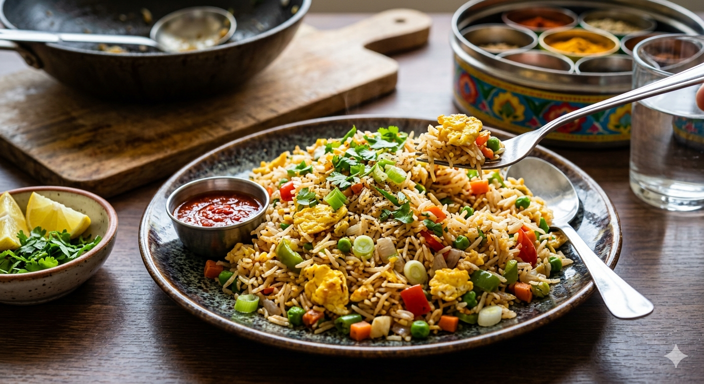

The EGG FRIED RICE

Here is a quick, vibrant, and delicious recipe for Indian Street-Style,
Egg Fried Rice (also popularly known as Anda Fried Rice). This recipe adapts a classic
style methodology infused with punchy Indian spices.
Prep Time & Yield
- Prep Time: 15 minutes
- Cook Time: 15 minutes
- Servings: 2-3 people
Ingredients
- Rice: 3 cups cooked Basmati rice (Leftover, cooled, and separated grains work best)
- Eggs: 3-4 large eggs
- Veggies: 1 medium onion (finely chopped), 1/2 cup cabbage (shredded), 1/4 cup carrots (finely chopped), 1/4 cup capsicum (chopped)
- Aromatics: 1 tbsp ginger-garlic paste, 2 green chillies (slit)
- Spices:1/2 tsp turmeric powder, 1 tsp red chilli powder, 1/2 tsp garam masala powder, 1/2 tsp black pepper powder
- Sauces:1 tbsp soy sauce, 1 tsp vinegar, 1 tbsp Schezwan sauce or green chilli sauce (optional for street-style kick)
- Fats & Herbs: 2 tbsp cooking oil, salt to taste, and a handful of chopped coriander leaves and spring onion greens for garnish.
Step-by-Step Instruction
- Scramble the Eggs: Heat 1 tablespoon of oil in a wide pan or wok over medium flame. Crack the eggs directly into the pan, season with a pinch of salt and black pepper, and scramble them until just soft. Remove the eggs and set them aside so they do not overcook.
- Sauté Aromatics: Add the remaining oil to the same pan. Turn the heat to high. Toss in the green chillies and ginger-garlic paste, sautéing for 30 seconds until fragrant. Add the chopped onions and stir-fry until translucent.
- Flash-Fry the Veggies: Toss in the cabbage, carrots, and capsicum. Stir-fry on high heat for 2 minutes so they cook but retain their crunchy bite.
- Spice it Up: Lower the heat slightly. Add the turmeric powder, red chilli powder, garam masala, and salt. Stir quickly to coat the vegetables uniformly without burning the spices.
- Toss and Finish: Pour in the soy sauce, vinegar, and Schezwan sauce. Mix well. Turn the heat back to high, add the cooked cold rice and the scrambled eggs. Gently toss everything together from the bottom up to ensure you do not break the long rice grains. Cook for 2-3 minutes until the rice is heated through.
- Garnish: Turn off the stove. Garnish generously with freshly chopped coriander leaves and spring onion greens. Serve hot!